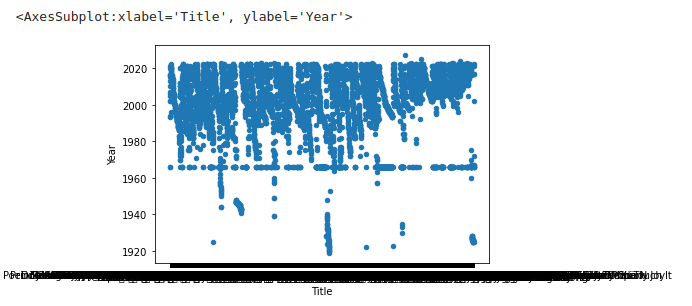
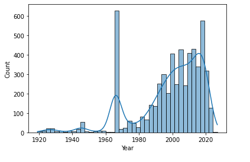

import pandas as pd
import re
import imdb
import time
ia = imdb.Cinemagoer()
df_director_films = pd.read_csv('Director_Movies_Clean.csv', encoding= 'utf-8-sig')
df_director_names = pd.read_csv('director_names.csv', encoding='unicode_escape')
kinds = {}
df_director_films
| Movie_ID | Title | Year | Person_ID | Name | |
|---|---|---|---|---|---|
| 0 | 3501074 | Madam Secretary (2015-2017) | 0 | 151 | Morgan Freeman |
| 1 | 106464 | Bopha! | 1993 | 151 | Morgan Freeman |
| 2 | 995854 | A Journal for Jordan | 2021 | 243 | Denzel Washington |
| 3 | 2671706 | Fences | 2016 | 243 | Denzel Washington |
| 4 | 413573 | Grey's Anatomy | 2016 | 243 | Denzel Washington |
| ... | ... | ... | ... | ... | ... |
| 6606 | 8571700 | Remembrance: A Portrait Study | 1967 | 9913311 | Edward Owens |
| 6607 | 12127402 | Autrefois J'ai aime une femme | 1966 | 9913311 | Edward Owens |
| 6608 | 12666216 | Sisters of the Screen - African Women in Cinema | 1966 | 11720380 | Beti Ellerson |
| 6609 | 12666216 | Sisters of the Screen - African Women in Cinema | 2002 | 11720380 | Beti Ellerson |
| 6610 | 10038432 | A Luta Continua | 1972 | 10555174 | Robert Van Lierop |
6611 rows × 5 columns
Removed all Duplicates from Dataframe
df_movies = df_director_films.drop_duplicates(subset=None, keep='first', inplace=False, ignore_index=False)
df_movies
| Movie_ID | Title | Year | Person_ID | Name | |
|---|---|---|---|---|---|
| 0 | 3501074 | Madam Secretary (2015-2017) | 0 | 151 | Morgan Freeman |
| 1 | 106464 | Bopha! | 1993 | 151 | Morgan Freeman |
| 2 | 995854 | A Journal for Jordan | 2021 | 243 | Denzel Washington |
| 3 | 2671706 | Fences | 2016 | 243 | Denzel Washington |
| 4 | 413573 | Grey's Anatomy | 2016 | 243 | Denzel Washington |
| ... | ... | ... | ... | ... | ... |
| 6606 | 8571700 | Remembrance: A Portrait Study | 1967 | 9913311 | Edward Owens |
| 6607 | 12127402 | Autrefois J'ai aime une femme | 1966 | 9913311 | Edward Owens |
| 6608 | 12666216 | Sisters of the Screen - African Women in Cinema | 1966 | 11720380 | Beti Ellerson |
| 6609 | 12666216 | Sisters of the Screen - African Women in Cinema | 2002 | 11720380 | Beti Ellerson |
| 6610 | 10038432 | A Luta Continua | 1972 | 10555174 | Robert Van Lierop |
6316 rows × 5 columns
Remove all the movies with no year (possibly television shows)
df_movies = df_movies[df_movies.Year != 0]
df_movies.describe()
| Movie_ID | Year | Person_ID | |
|---|---|---|---|
| count | 5.699000e+03 | 5699.000000 | 5.699000e+03 |
| mean | 4.781896e+06 | 1998.656431 | 9.356992e+05 |
| std | 4.761429e+06 | 19.859445 | 1.235733e+06 |
| min | 1.187000e+04 | 1919.000000 | 1.510000e+02 |
| 25% | 3.851770e+05 | 1991.000000 | 2.288530e+05 |
| 50% | 3.223890e+06 | 2004.000000 | 6.085750e+05 |
| 75% | 8.135978e+06 | 2014.000000 | 9.373060e+05 |
| max | 2.107769e+07 | 2027.000000 | 1.172038e+07 |
df_movies.loc[df_movies['Year'] == 2021]
| Movie_ID | Title | Year | Person_ID | Name | |
|---|---|---|---|---|---|
| 2 | 995854 | A Journal for Jordan | 2021 | 243 | Denzel Washington |
| 19 | 14324128 | NYC Epicenters 9/11-2021ÃÂý | 2021 | 490 | Spike Lee |
| 185 | 13935770 | Chris Rock Total Blackout: The Tamborine Exten... | 2021 | 1674 | Chris Rock |
| 267 | 10608454 | Harlem | 2021 | 2700 | Malcolm D. Lee |
| 268 | 3554046 | Space Jam: A New Legacy | 2021 | 2700 | Malcolm D. Lee |
| ... | ... | ... | ... | ... | ... |
| 6487 | 12223626 | Black Seeds: The History of Africans in America | 2021 | 5679045 | Bayer Mack |
| 6529 | 8537542 | Cold Blood | 2021 | 6462306 | Taylor Ri'chard |
| 6541 | 13814666 | Pursued | 2021 | 7280958 | Fathia Absie |
| 6552 | 15596914 | Voodoo | 2021 | 7385237 | Phillip Youmans |
| 6604 | 11753636 | Private Imaginings and Narrative Facts | 2021 | 9913311 | Edward Owens |
173 rows × 5 columns
df_movies.plot(x = 'Title', y='Year', kind = 'scatter')

import matplotlib.pyplot as plt
import seaborn as sns
sns.histplot(df_movies.Year, kde=True)
plt.show()

df_movies['Year'].describe()
count 5699.000000
mean 1998.656431
std 19.859445
min 1919.000000
25% 1991.000000
50% 2004.000000
75% 2014.000000
max 2027.000000
Name: Year, dtype: float64
def df_director_id(name: str):
for director in df_movies.itertuples():
if director.Name == name:
return (str(director.Person_ID).zfill(7))
def movie_format(movie_id):
if movie_id == None:
return None
if len(movie_id) > 1:
return ', '.join(map(str, movie_id))
else:
return ' '.join(map(str, movie_id))
def movie_metascore(movie_id):
return movie_id['metascore']
def movie_budget(movie_id):
box_off = movie_id.get('box office', None)
if box_off == None:
return None
else:
budget = re.search('[0-9,]*\d', str(movie_id['box office']))
return budget.group(0)
#tstmovie = ia.get_movie('13972246', info=['main', 'critic_reviews', 'vote details', 'plot'])
#print(tstmovie['box office'])
#budget = re.search('[0-9,]*\d', '$1') #str(tstmovie['box office']))
#print(budget)
#print(movie_budget(tstmovie))
# print(movie_metascore(tstmovie))
df_movies['Type'] = ""
df_movies['Genres'] = ""
df_movies['Metascore'] = ""
df_movies['Budget'] = ""
df_movies['Votes'] = ""
df_movies['Rating'] = ""
df_movies['Runtime'] = ""
df_movies
df_movies = df_movies.reset_index()
df_movies.head(20)
#x = 0
for i in range (6049, 6316): #df_movies.itertuples():
if i % 150 == 0:
print(f"{df_movies['Movie_ID'][i]} and {df_movies['Title'][i]}")
time.sleep(180) # 3 minutes
movie = ia.get_movie(df_movies['Movie_ID'][i], info=['main', 'critic_reviews', 'vote details', 'plot']) #ia.get_movie(df_movies['Movie_ID'][i])
df_movies.loc[i, 'Type'] = movie.get('kind', None)
df_movies.loc[i, 'Runtime'] = movie_format(movie.get('runtime', None)) #movie.get('runtime', None)
df_movies.loc[i, 'Rating'] = movie.get('rating', None)
df_movies.loc[i, 'Votes'] = movie.get('votes', None)
df_movies.loc[i, 'Genres'] = movie_format(movie.get('genres', None)) #str(movie.get('genres', None))
df_movies.loc[i, 'Metascore'] = movie.get('metascore', None)
df_movies.loc[i, 'Budget'] = movie_budget(movie)
#x +=1
#df_movies
# if x == 10:
# break
#df_movies.head(10)
9847438 and Football Town: Cleveland Ohio
6340186 and Film 13
df_movies.to_csv("Director_Movies_Analyze.csv", encoding='utf-8-sig')
for Movie_ID in df_movies.columns[1:]:
print(df_movies[Movie_ID])
spike_lee = ia.get_person('0000490')
sidney_poitier = ia.get_person('0001627')
tvshow = ia.get_movie('209093', info='critic_reviews')
print(f"{spike_lee['birth date']} {spike_lee['height']} {spike_lee['birth info']} ")
print(f"{sidney_poitier['birth date']} {sidney_poitier['height']} {sidney_poitier['birth info']} ")
1957-03-20 5' 7" (1.7 m) {'birth place': 'Atlanta, Georgia, USA'}
1927-02-20 6' 2½" (1.89 m) {'birth place': 'Miami, Florida, USA'}
tvshow.infoset2keys
{'critic_reviews': []}
mv = ia.get_movie('790770', info=['main', 'critic_reviews', 'vote details', 'plot'])
#metascore = ia.get_movie_critic_reviews('7349662')
def person_height_ft(person_id):
person_height = person_id.get('height', None)
print(person_height)
if person_height == None:
return None
else:
meter = re.search('[0-9\']+\s[0-9]+.?', str(person_height))
height = re.search('\([0-9]+\.?[0-9]*', str(person_height))
height = str(height.group(0)).replace('(','')
return meter.group(0)
tstperson = ia.get_person('0002700')
#str(director.Person_ID).zfill(7)
#print(tstmovie['box office'])
#budget = re.search('[0-9,]*\d', '$1') #str(tstmovie['box office']))
#print(budget)
birth_list = tstperson.get('birth info', None)
#city, state, country = str(birth_list['birth place']).split(", ")
#city, state, country = birth_list.split(',')
#print(tstperson['mini biography'])
#print(tstperson.get('height', None))
print(birth_list)
#print(f"{city} adfsfd {state} aerrod {country}")
#tstperson['birth info']
# print(movie_metascore(tstmovie))
{'birth place': 'USA'}
tstperson.infoset2keys
{'main': ['birth info', 'headshot', 'filmography', 'imdbID', 'name'],
'biography': ['headshot',
'birth name',
'height',
'mini biography',
'trade mark',
'trivia',
'quotes',
'birth date',
'birth notes']}
df_director_names = pd.read_csv("director_names_analyze.csv", index_col=[0], encoding="utf-8-sig")
for i in range (67, 311): #df_director_names.itertuples():
if df_director_names['Person_ID'][i] == 0:
continue
if i % 100 == 0:
print(f"{df_director_names['Person_ID'][i]} and {df_director_names['Name'][i]}")
time.sleep(180) # 3 minutes
director = ia.get_person(str(df_director_names['Person_ID'][i]).zfill(7))
person_height = director.get('height', "")
print(person_height)
if person_height == "":
height_m = height_ft = None
else:
height_ft = re.search('[0-9\']*\s[0-9]*.?', str(person_height))
height_ft = height_ft.group(0)
height_m = re.search('\([0-9]+\.?[0-9]*', str(person_height))
height_m = str(height_m.group(0)).replace('(','')
birth_list = tstperson.get('birth info', "")
if birth_list == "":
birth_city = birth_state = birth_country = None
else:
birth_city, birth_state, birth_country = str(birth_list['birth place']).split(", ")
df_director_names.loc[i, 'Birth Date'] = director.get('birth date', None)
df_director_names.loc[i, 'Height ft'] = height_ft
df_director_names.loc[i, 'Height m'] = height_m
df_director_names.loc[i, 'Birth City'] = birth_city
df_director_names.loc[i, 'Birth State'] = birth_state
df_director_names.loc[i, 'Birth Country'] = birth_country
df_director_names.loc[i, 'Headshot'] = director.get('headshot', None)
try:
df_director_names.loc[i, 'Biography'] = director.get('biography', None)
except:
df_director_names.loc[i, 'Biography'] = "Error"
print("test")
df_director_names['Birth Date'] = ""
df_director_names['Height ft'] = ""
df_director_names['Height m'] = ""
df_director_names['Birth City'] = ""
df_director_names['Birth State'] = ""
df_director_names['Birth Country'] = ""
df_director_names['Headshot'] = ""
df_director_names['Biography'] = ""
df_director_names
df_director_names.to_csv("director_names_analyze.csv", encoding='utf-8-sig')
for i in range (0, 311): #df_director_names.itertuples():
if df_director_names['Person_ID'][i] == 0:
continue
# if i % 100 == 0:
# print(f"{df_director_names['Person_ID'][i]} and {df_director_names['Name'][i]}")
# time.sleep(180) # 3 minutes
director = ia.get_person(str(df_director_names['Person_ID'][i]).zfill(7))
# person_height = director.get('height', "")
# print(person_height)
# if person_height == "":
# height_m = height_ft = None
# else:
# height_ft = re.search('[0-9\']*\s[0-9]*.?', str(person_height))
# height_ft = height_ft.group(0)
# height_m = re.search('\([0-9]+\.?[0-9]*', str(person_height))
# height_m = str(height_m.group(0)).replace('(','')
birth_list = director.get('birth info', None)
if birth_list is None:
birth_city = birth_state = birth_country = None
elif len((birth_list['birth place']).split(", ")) == 4:
birth_city = None
birth_city, city, birth_state, birth_country = str(birth_list['birth place']).split(", ")
elif len((birth_list['birth place']).split(", ")) == 2:
birth_city = None
birth_state, birth_country = str(birth_list['birth place']).split(", ")
elif len((birth_list['birth place']).split(", ")) == 1:
birth_city = birth_state = None
birth_country = str(birth_list['birth place'])
else:
birth_city, birth_state, birth_country = str(birth_list['birth place']).split(", ")
#birth_city = birth_state = birth_country = "Error"
# df_director_names.loc[i, 'Birth Date'] = director.get('birth date', None)
# df_director_names.loc[i, 'Height ft'] = height_ft
# df_director_names.loc[i, 'Height m'] = height_m
df_director_names.loc[i, 'Birth City'] = birth_city
df_director_names.loc[i, 'Birth State'] = birth_state
df_director_names.loc[i, 'Birth Country'] = birth_country
# df_director_names.loc[i, 'Headshot'] = director.get('headshot', None)
# try:
# df_director_names.loc[i, 'Biography'] = director.get('biography', None)
# except:
# df_director_names.loc[i, 'Biography'] = "Error"
# print("test")